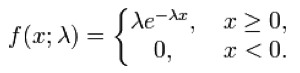

The Exponential distribution describes the times between events in a Poisson process, i.e. a process in which events occur continuously and independently at a constant average rate λ

Parameters:
Mean: 1/λ
Variance: 1/λ2
Read more about the exponential distribution at: